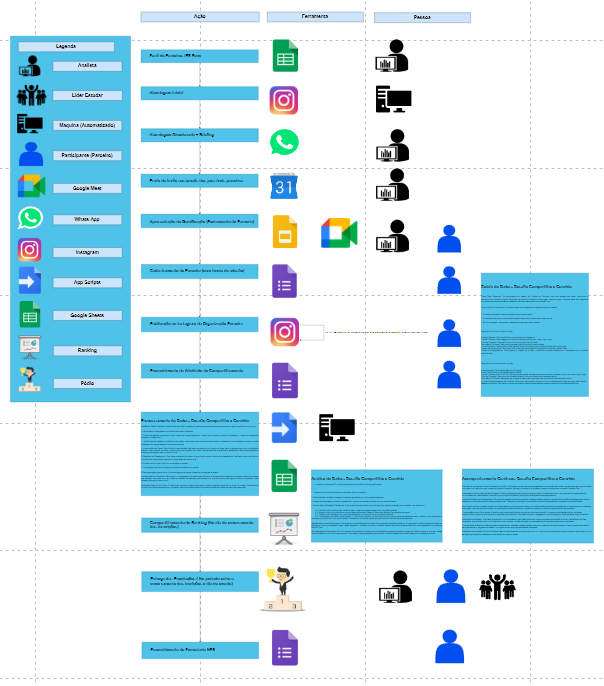

Fundação Estudar
Gamification
Engenharia de Dados & Analista de Relacionamento Institucional
 Bem-vindo ao projeto de Gamificação de Parceria Institucional da Fundação Estudar! Este projeto, concebido sob a orientação da gestora Yasmin Antunes e operacionalizado por Rafael Parish, visa fortalecer parcerias institucionais por meio de estratégias inovadoras de gamificação. O projeto tem como objetivo principal promover uma colaboração eficaz entre a Fundação Estudar e suas instituições parceiras, incentivando a participação e o engajamento por meio de recompensas e reconhecimento.
Bem-vindo ao projeto de Gamificação de Parceria Institucional da Fundação Estudar! Este projeto, concebido sob a orientação da gestora Yasmin Antunes e operacionalizado por Rafael Parish, visa fortalecer parcerias institucionais por meio de estratégias inovadoras de gamificação. O projeto tem como objetivo principal promover uma colaboração eficaz entre a Fundação Estudar e suas instituições parceiras, incentivando a participação e o engajamento por meio de recompensas e reconhecimento.
Referência
"Gamificação é a arte de tornar o ordinário extraordinário, transformando desafios em aventuras e engajando as pessoas de maneiras inimagináveis." - Kevin Werbach, Professor de Estudos Legais e Éticos em Negócios na Wharton School, Universidade da Pensilvânia.
A Fundação Estudar lançou dois desafios emocionantes para organizações estudantis: "Compartilhe e Convide" e "Mobilização na Universidade". No primeiro desafio, as organizações são convidadas a promover eventos e oportunidades ao longo do ano, compartilhando postagens sobre eles em suas redes sociais e convidando amigos para se inscreverem. O objetivo é alcançar uma meta de inscrições iniciadas por organização, com um número específico de inscritos impactados em cada evento. Já no segundo desafio, os participantes devem organizar atividades universitárias para promover oportunidades oferecidas pela Fundação. Ambos os desafios oferecem recompensas valiosas, incluindo, mentorias, workshops, além de prêmios especiais para o alcance de metas .
Porquê eu?
No último semestre de 2023, tive a oportunidade de participar do programa de voluntariado em vendas da Escola de Liderança, uma plataforma educacional desenvolvida pela Fundação Estudar com o objetivo de fornecer capacitações essenciais para o mercado de trabalho e formar líderes de excelência no Brasil. Durante minha atuação como voluntário, desenvolvi um algoritmo de automação para a etapa de abordagem de vendas, que se mostrou altamente eficaz. Fiquei em 7º lugar ao final do ciclo e em virtude do meu desempenho ajudando minha equipe,fui honrado com o convite para mentorar uma equipe inteira no próximo ciclo. Esta experiência foi marcante, pois meu time alcançou resultados históricos, registrando 223 vendas e um faturamento de R$8000,00. Recebi cartas de recomendação e o convite para operacionalizar um projeto inovador, o projeto acima. Liderar a equipe, implementar minha criação e continuar aprendendo sobre o impacto que desejo causar com meu trabalho, foram aspectos fundamentais dessa jornada.
ALGORITMO DE AUTOMAÇÃO EM ABORDAGENS
# Codigo criado por Rafael Parish, Cientista de Dados HS, Analista de Dados Google, Engenheiro de Dados XP
# Toda e Qualquer Duvida Quanto a sua utilização não hesitar em entrar contato Comigo por LinkedIn ou outras redes sociais.
# Importando as bibliotecas (Lembre-se de instala-las antes de rodar o codigo)
import pyperclip
import pyautogui
# Insira entre os """""" A sua mensagem de abordagem personalizada
mensagem_abordagem = (f"""
Oiiii, tudo bem?
Eu me chamo Rafael Parish, sou representante da @FundacaoEstudar.
Você pode me passar o contato de algum representante da sua instituição, estamos com um programa de parceria aberto exclusivamente para vocês.
Desde já agradeço a sua atenção. 😊
""")
# Tempo de execução entre ações (Minha sugestão é que para computadores mais fracos seja 5-6 e para mais rapidos 2-3)
pyautogui.PAUSE = 3
# Definindo a quantidade de vezes que o loop será executado
quantidade_loops = 10
# abrir uma nova aba e ir para o instagram:
pyautogui.hotkey("ctrl", "t")
# configure o localizador para as coordenadas do preencher site
pyautogui.click(x=203, y=62)
pyperclip.copy("www.instagram.com")
pyautogui.hotkey("ctrl", "v")
pyautogui.press("enter")
# abrir uma nova aba e ir para o planilha de metrificação:
pyautogui.hotkey("ctrl", "t")
# configure o localizador para as coordenadas do preencher site
pyautogui.click(x=203, y=62)
# Insira no Parentesis sua planilha atual de Leads (Minha sugestão é criar uma planilha a parte para este processo com o interesse de não desconfigurar a planilha geral)
pyperclip.copy("https://docs.google.com/spreadsheets/d/1ASSoq4m1lU8wx90x7ngccwBa1kPWKXxdoXwf6vPwMWM/edit#gid=1228632839")
pyautogui.hotkey("ctrl", "v")
pyautogui.press("enter")
# clicando no lead atual (O primeiro lead da sua lista deve estar nesta coordenada)
pyautogui.click(x=412, y=264)
cell_counter = 1
for _ in range(quantidade_loops):
# Copiando o conteúdo de contato do lead
pyautogui.hotkey("ctrl", "c")
pyautogui.press("enter")
pyautogui.press("enter")
# voltando para o instagram
pyautogui.hotkey("ctrl", "shift", "tab")
# configurar as coordenadas para clicar no botão Pesquisar
pyautogui.click(x=43, y=271)
# configurar as coordenadas para clicar no escrever do Pesquisar
pyautogui.click(x=225, y=200)
pyautogui.hotkey("ctrl", "v")
# clicando no botão do usuario procurado
pyautogui.click(x=226, y=260)
pyautogui.PAUSE = 3
# clicar no botao de acesso ao Instagram Conversas
pyautogui.click(x=692, y=143)
# clicando no botão Escrever Mensagem(CORRIGIR)
pyautogui.click(x=612, y=1039)
# Preenchendo a mensagem
pyperclip.copy(mensagem_abordagem)
pyautogui.hotkey("ctrl", "v")
# Envio da abordagem
pyautogui.press("enter")
# voltando para a metrificação em planilhas
pyautogui.hotkey("ctrl", "shift", "tab")
print('Abordagens feitas com sucesso!')